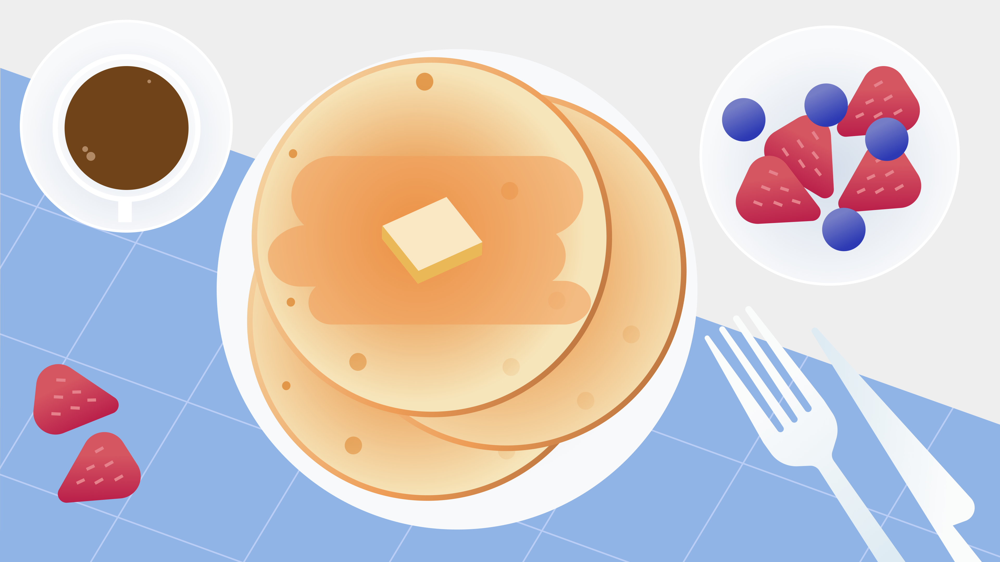

Hotcakes

Hotcakes pata tu desayuno
Un rico desayuno no muy saludable para arrancar con energias tu dia
Ingredientes:
- harina leudante
- sal
- huevos
- azúcar
- leche
- manteca
Pasos:
- Precalienta un comal ligeramente engrasado a fuego medio-alto.
- Mezcla harina, azúcar, polvo para hornear, bicarbonato y sal. Haz un pozo en el centro. En un recipiente aparte, bate el huevo junto con la leche y el aceite. Vierte dentro de la mezcla de harina. Bate hasta lograr una consistencia suave.
- Vierte la masa sobre el comal caliente, utilizando aproximadamente 1/4 taza por cada hot cake. Cocina hasta que ambos lados de los hot cakes tomen un color dorado. Sírvelos calientes.
Volver al menu